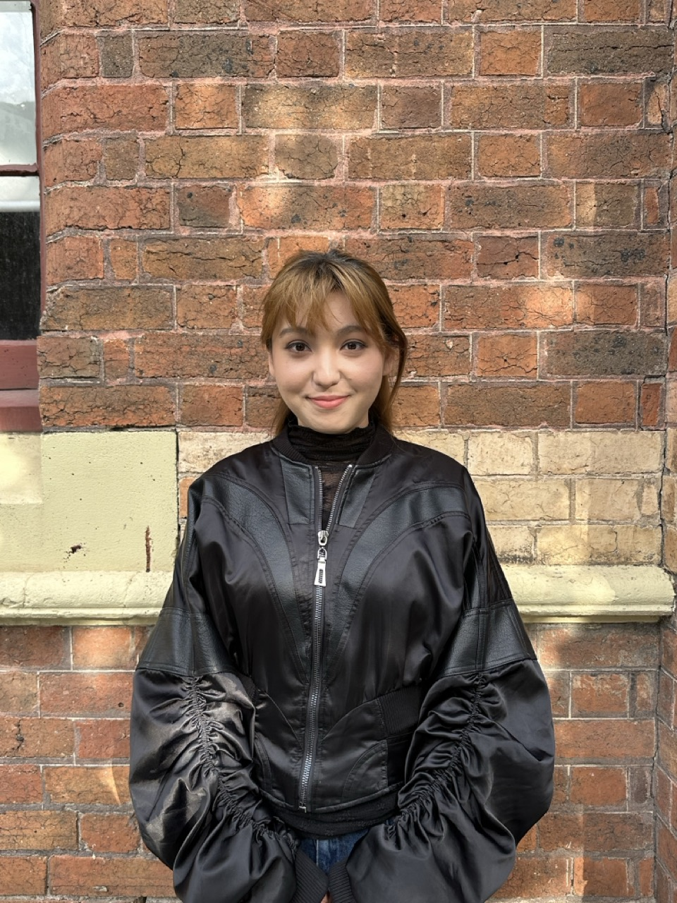

Product Designer
with a Business Lens.
I design digital products that move numbers — conversion rates, engagement metrics, and real outcomes. With a background in Management and a Master in Design, I sit at the intersection where strategy meets interface.

A small set of recent projects.
Onco
A cross-device medical imaging support system — bridging the gap between remote cancer patients in rural Australia and the specialists they can't easily reach.
View case study →
Skyland Guardian
A mobile guardian-style game set in a floating-island world. Owned the in-game UI, onboarding, and the retention loop that lifted day-7 engagement by 18%.
View case study →
Fintech Webgame — Brand Design
A brand system for a playable on-chain experience — logo, type pairings, motion tokens, and an in-game brand kit that survives across 12 mini-games.
View case study →
Poster Archive
A living collection of poster work spanning editorial campaigns, cultural events, and speculative briefs — exploring type as image and constraint as creative method.
View archive →
Social & Digital Content
Short-form video and social creative for a Monash University research recruitment campaign — audience-targeted formats for Meta, iterated against A/B data to lift sign-up conversion by 15% and expand demographic reach by 30%.
View case study →That's the headline. The archive is longer.
Earlier work across edtech, hardware, and games available on request — drop a line and I'll send the PDF.
Request full archive →I make design feel intentional.
— and commercially inevitable.
My path into design started with a management degree and a curiosity about why people choose the things they choose. I published research on nostalgic cultural consumption — and without realising it, I was already doing user psychology.
When I moved into product design, that lens came with me. I design for emotional histories and irrational preferences, not just rational ones.